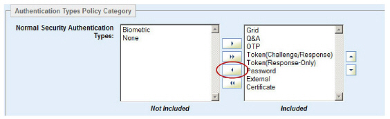

|
IdentityGuard Server 11.0 Administration Guide |
|
IdentityGuard Server 11.0 Administration Guide |
In the following screen capture, note the two arrow keys to the right of the Included list.

These arrows let you set the precedence of the features:
● Select an item in the Included list.
● Click either the up-arrow to move the item up the list or click the down-arrow to move it lower in the list. Click the arrow button once for each position you want the item moved.
This controls authentication precedence. This comes into play when a user is assigned multiple authentication methods and Entrust IdentityGuard needs to issue a challenge to the user. If the application does not specify the authentication method, Entrust IdentityGuard uses the first method in the policy list that represents an authentication method assigned to the user.
Note: When Entrust IdentityGuard Radius is explicitly configured to use external authentication, the precedence setting has no effect; external authentication is always used.
These arrows also appear on some Groups pages when multiple repositories are available. They set the order of repositories to consider when adding users. See Setting repository order.